Perception & Autonomy · Path Planning
Robot-Aware Path Planning Benchmark
This project evaluates whether paths produced by established planners remain physically feasible and operationally useful once actual robot geometry, indoor clutter, common path refinement, continuous clearance, motion limits, and safety-aware operating policies are introduced. The study progresses from algorithm validation to robot-specific route feasibility and finally to a mission-level engineering trade study.
1. Benchmark Strategy
The benchmark separates algorithm correctness from robot-level feasibility. Dijkstra and A* were first checked against reference grid-search costs, while RRT and RRT* were validated with controlled seeds and full-edge collision checking. The same planners are then placed inside a metric indoor environment where the robot footprint, rather than a point-mass assumption, determines free configuration space.
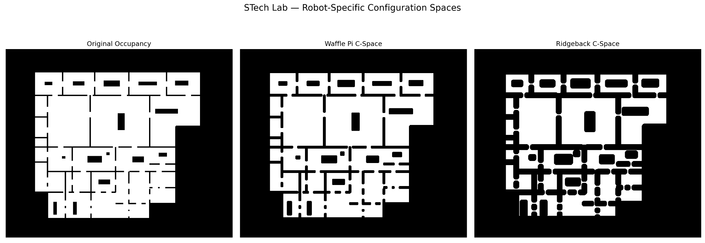
2. Metric Indoor Environment
The robot-aware benchmark uses a synthetic metric office / laboratory / warehouse-like environment rather than an exact reconstruction of a specific facility. Corridors, rooms, bottlenecks, fixed structures, open regions, and multiple route alternatives provide controlled geometry for studying how robot dimensions and local clutter change traversability. The map resolution is 0.05 m/cell.
TurtleBot3 Waffle Pi
Compact differential-drive platform. The benchmark uses its physical dimensions, circumscribed footprint, translational and angular limits, and curvature-dependent execution constraint.
Clearpath Ridgeback
Larger holonomic mecanum platform. Its larger footprint erodes significantly more free space and changes both route access and stochastic search difficulty.
3. Scenario 01 — Footprint-Driven Route Divergence
Scenario 01 holds the environment, start, and goal fixed while changing only the robot-specific configuration space. The objective is to determine whether both robots can use the same route before comparing planner choice or operating speed.
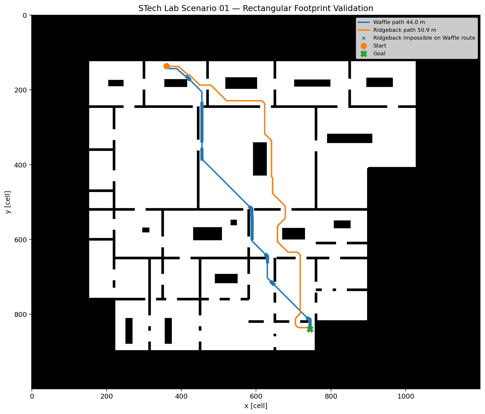
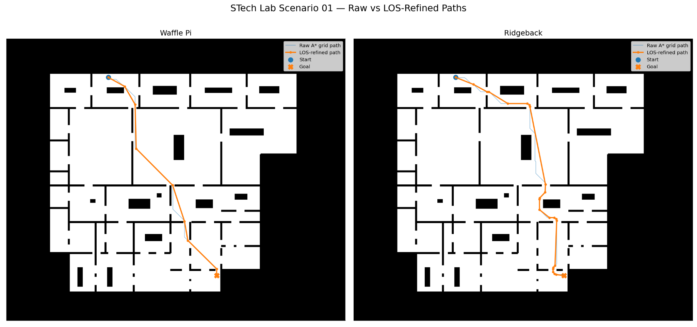
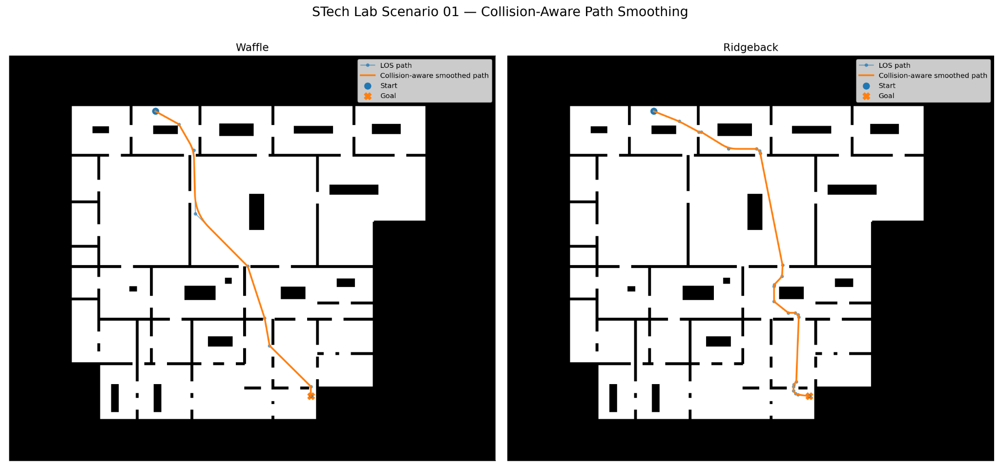
| Robot | Final path | Mission time |
|---|---|---|
| TurtleBot3 Waffle Pi | 42.29 m | 192.86 s |
| Clearpath Ridgeback | 48.57 m | 48.97 s |
Footprint-driven route divergence between TurtleBot3 Waffle Pi and Clearpath Ridgeback.
4. Scenario 02 — Dense Temporary Clutter
Scenario 02 introduces 132 temporary obstacles—72 circular and 60 polygonal objects—to represent temporary or movable occupancy such as people, carts, staged materials, equipment, or other local clutter. These are not predicted dynamic trajectories; they provide a controlled way to study route availability and robot-dependent clearance under denser occupancy.
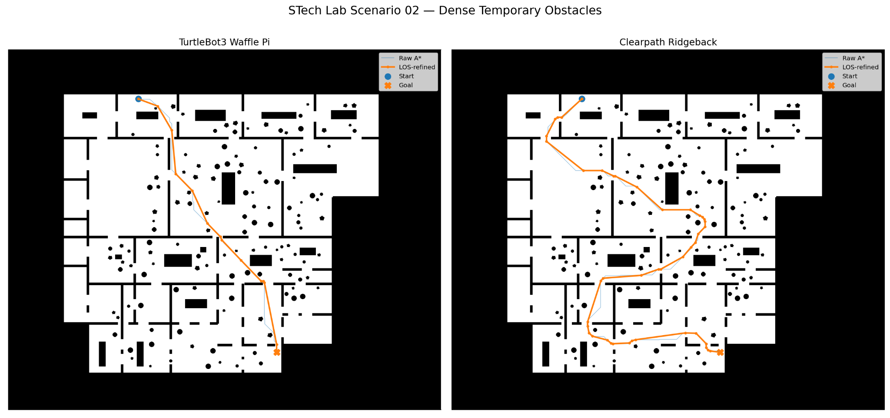
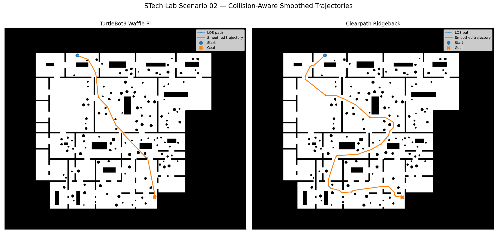
| Robot | Final path | Mission time |
|---|---|---|
| TurtleBot3 Waffle Pi | 42.34 m | 193.09 s |
| Clearpath Ridgeback | 79.47 m | 79.03 s |
Robot-dependent route planning and mission performance in dense temporary occupancy.
5. Scenario 03 — Safety-Aware Multi-Planner Evaluation
Scenario 03 fixes the robot and environment assumptions and evaluates Dijkstra, A*, RRT, and RRT* under the same downstream path-to-execution pipeline. A common 0.025 m additional safety allowance is applied beyond the physical footprint. This value is resolution-consistent with the 0.05 m/cell map and is not presented as a universal safety standard.
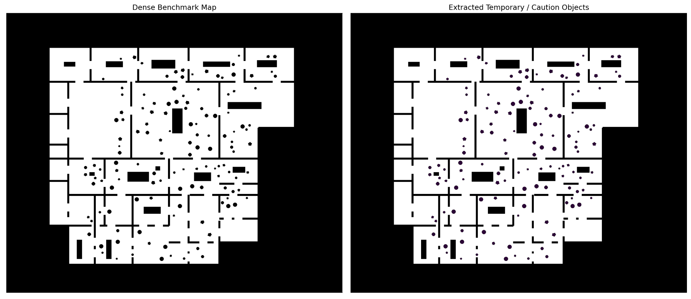
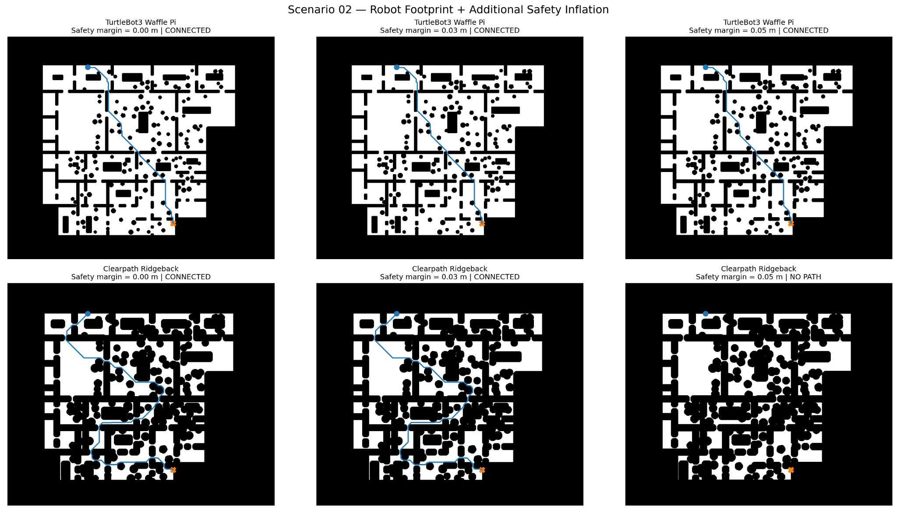
Common Path-to-Execution Pipeline
Planner
→ Raw path
→ LOS simplification
→ Collision-aware smoothing
→ Uniform resampling
→ Continuous clearance validation
→ Curvature / acceleration constraints
→ Caution-zone operating-speed policy
→ Mission timeThe benchmark explicitly distinguishes planner success, raw continuous feasibility, and final trajectory feasibility. A route may therefore be valid under the planner's discrete collision model yet fail a stricter continuous clearance check, or a valid raw route may acquire a small local violation after refinement.
6. Clearance Is Quantified, Not Hidden
For each resampled path location, the distance to the nearest occupied region is compared with the effective robot envelope. Infeasibility is not treated as a vague binary label: maximum violation depth, affected samples, and violation-affected path length are recorded.
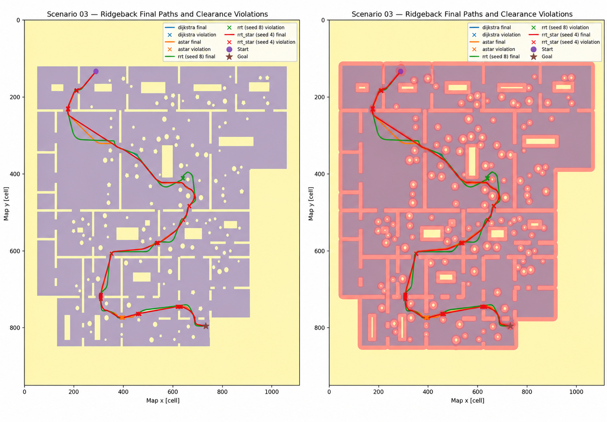
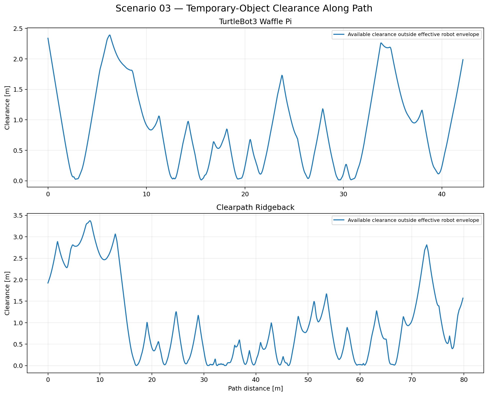
7. Human-Environment Operating-Speed Policy
Open-space cruise is set to 80% of the platform maximum speed. Within the defined caution region around temporary objects, commanded speed is capped at 0.30 m/s. This policy is applied downstream of the planner so every planner is evaluated under the same operational rule.
| Robot | Open-space cruise | Caution-zone cap |
|---|---|---|
| TurtleBot3 Waffle Pi | 0.176 m/s | 0.176 m/s |
| Clearpath Ridgeback | 0.880 m/s | 0.300 m/s |
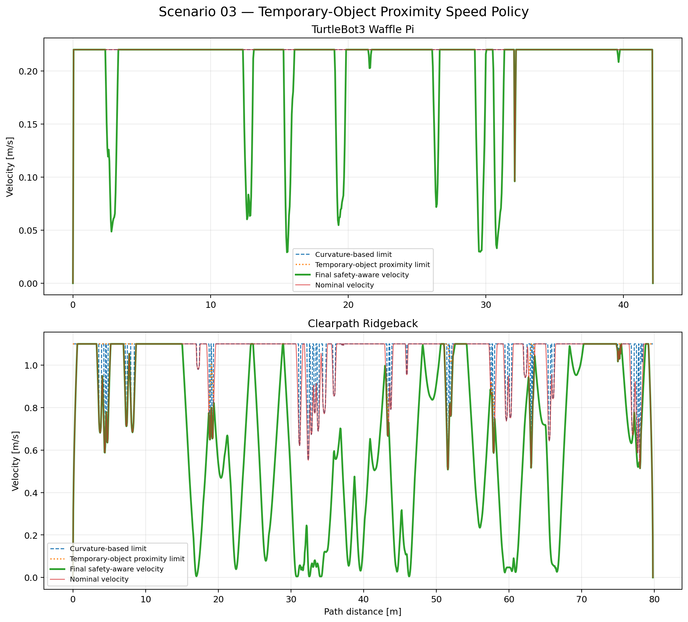
8. Final Planner Benchmark
Dijkstra and A* are deterministic baselines. RRT and RRT* are evaluated across 10 controlled seeds with a final budget of 50,000 iterations. RRT* convergence is additionally examined at 5k, 10k, 20k, and 50k iterations.
TurtleBot3 Waffle Pi

| Planner | Success | Planning time | Final path | Mission time | Final feasible |
|---|---|---|---|---|---|
| Dijkstra | Yes | 7.55 s | 42.13 m | 240.08 s | Yes |
| A* | Yes | 1.10 s | 42.14 m | 240.16 s | Yes |
| RRT | 10/10 | ~1.0 s median | ~53.10 m median | ~302.15 s median | 7/10 |
| RRT* | 10/10 | ~402 s median | ~41.66 m median | ~237.16 s median | 9/10 |
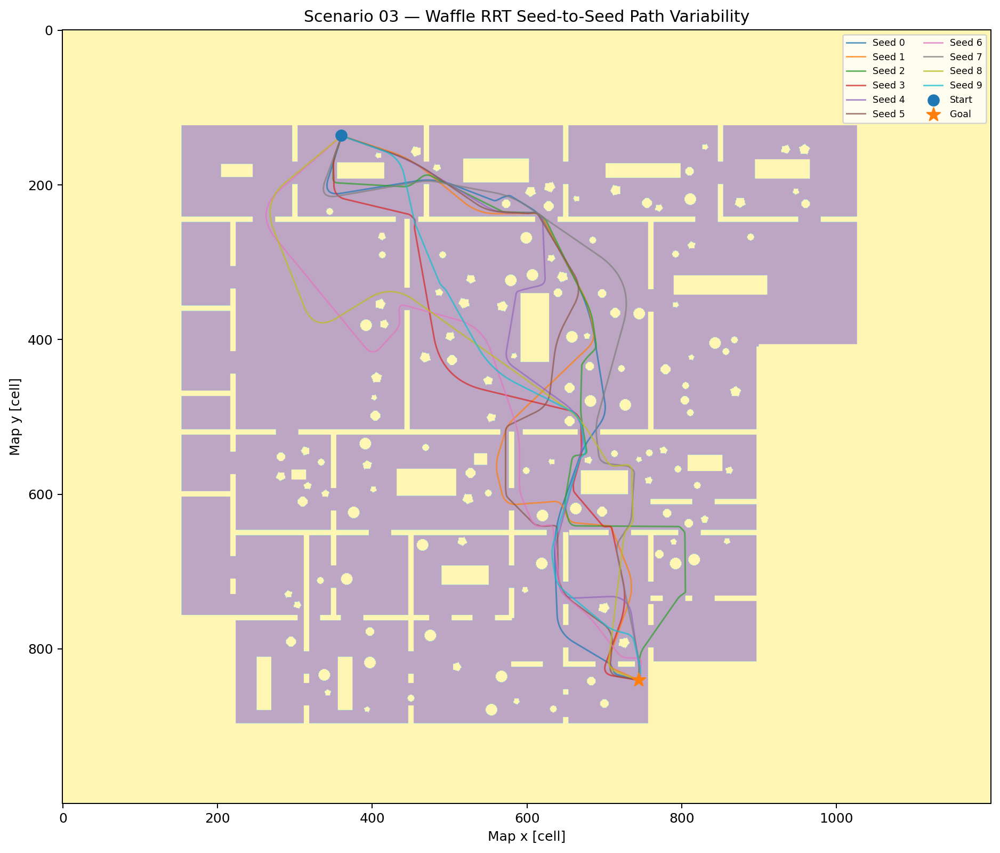
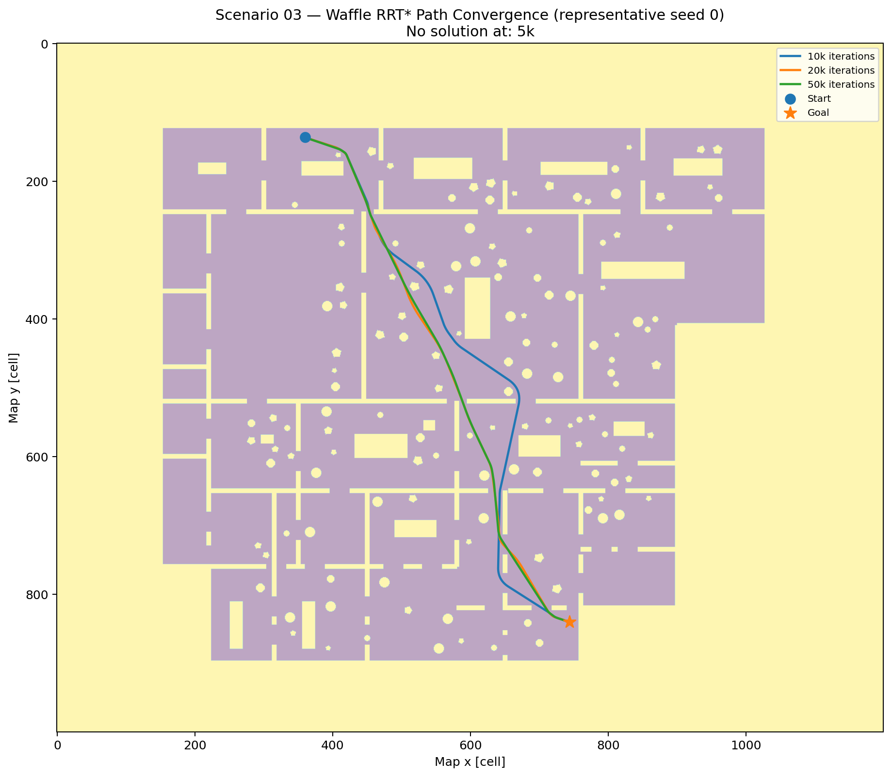
Clearpath Ridgeback
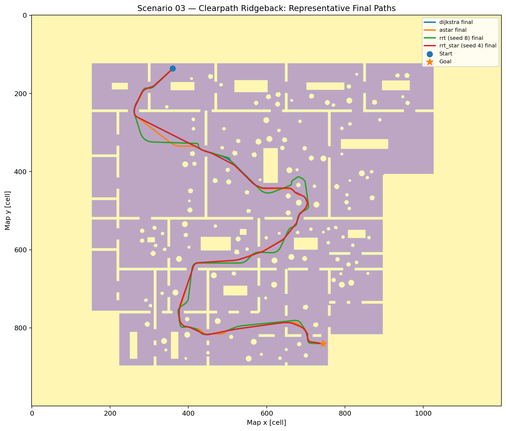
| Planner | Success | Planning time | Final path | Mission time | Final feasible |
|---|---|---|---|---|---|
| Dijkstra | Yes | 3.63 s | 79.41 m | 203.59 s | No |
| A* | Yes | 2.98 s | 79.81 m | 205.33 s | No |
| RRT | 7/10 | Variable | ~86.64 m median | ~222.10 s median | 0/7 successful trials |
| RRT* | 7/10 | ~170 s median | ~79.37 m median | ~203.55 s median | 0/7 successful trials |
The deterministic Ridgeback raw paths pass continuous clearance, but common refinement introduces small local safety-margin violations: 14.2 mm for Dijkstra and 8.2 mm for A*. Those violations are reported rather than tuned away.
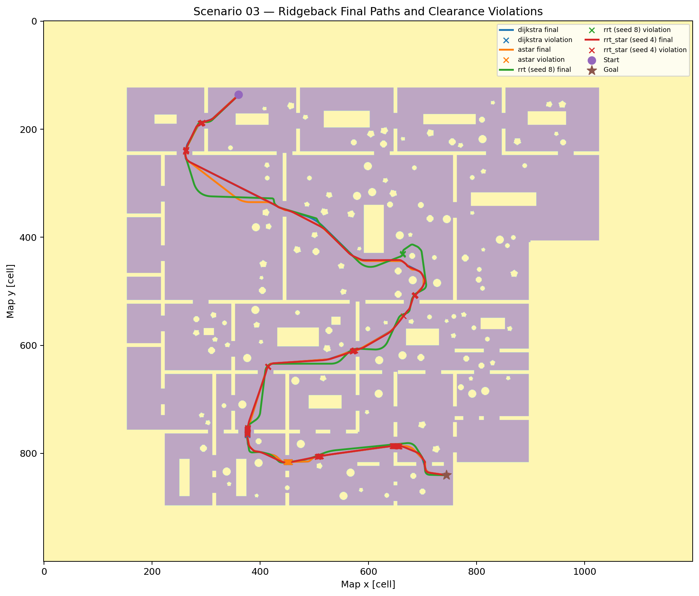
9. Engineering Findings
Geometry Changes Feasibility
The same physical map becomes a different planning problem once the robot footprint is applied.
Clutter Amplifies Footprint Effects
Local temporary occupancy can remove or narrow routes that remain usable to a smaller platform.
Planner Success ≠ Execution Feasibility
Discrete planner success, raw continuous feasibility, and final post-processed feasibility are separate engineering outcomes.
Shortest Path ≠ Best Engineering Choice
RRT* can improve path length while providing negligible mission benefit relative to its computation cost.
10. Limitations
- Orientation-independent circumscribed-circle planning footprint rather than full SE(2) state.
- Temporary objects are static snapshots rather than predicted moving agents.
- No local planner, online replanning, or closed-loop tracking-error benchmark.
- Simplified Ridgeback translational dynamics; no wheel-level mecanum model.
- No localization uncertainty, sensor delay, or actuator-delay model.
- The 0.025 m safety allowance is resolution-consistent, not a certified physical safety margin.
- RRT/RRT* nearest-neighbor search uses a simple linear scan.
- Ten stochastic seeds support an engineering comparison, not a large-sample statistical claim.
11. Project Resources
Source & Results
Planner implementations, robot models, metric maps, Scenario 01–03 benchmark code, final CSV data, logs, and visualizations.
Final Technical Report
Full report covering algorithm validation, metric environment design, robot-specific configuration spaces, Scenario 01–03 methodology, safety-aware execution, stochastic benchmarking, convergence, limitations, appendices, and reproducibility.
Project by Sooyong Kim · Robotics & Autonomous Systems Portfolio